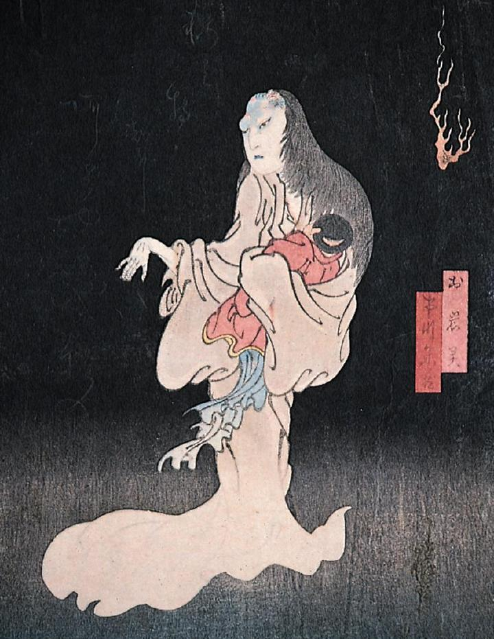

← 图鉴索引

子供を抱いたお岩の幽霊。白装束で足が見えない。腕を前に垂らし、背後には怪火が浮かんでいる。
著作者：猿雀／出典：親書誌：M80_naprstek_0013：お岩霊；オイワノレイ／日付：2011／資源識別子：M80_naprstek_0013_0001_0000
Copyright (c)2010- International Research Center for Japanese Studies, Kyoto, Japan. All rights reserved.